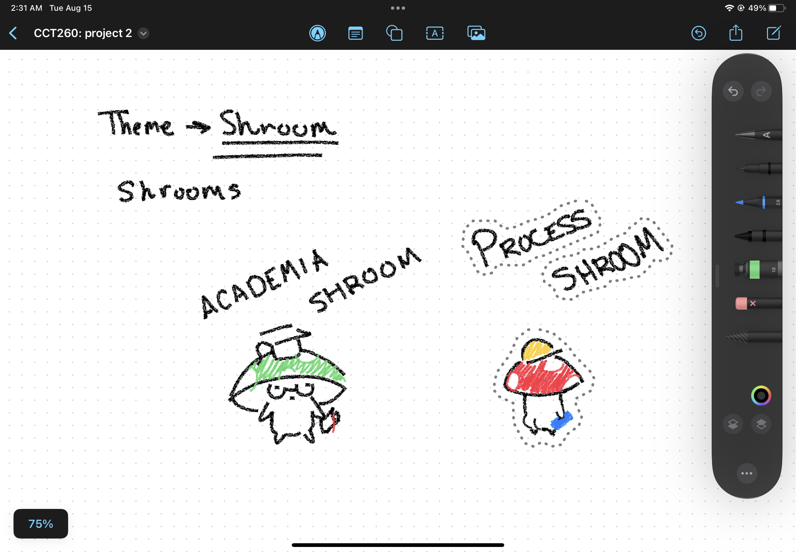

I started the process of designing my website with the idea that I wanted it to follow some sort of theme. While brainstorming, I was thinking about my name and thought about the nickname my friends gave me: Shru. Over a few years, my nickname changed while keeping its roots. During the past year, it came to be associated with mushrooms. That's when I decided my site would be mushroom themed.
The first step I took was putting down any ideas that came to mind that would relate to the theme, which ended up with me drawing mushroom characters I called "Shrooms."

After drawing a few samples "Shrooms," I went straight to planning my layout and the site's information architecture. I started by writing down the requirements from the Project 2 info provided. I was required to include the following pages: home, media, contact, process, and resume. With the mindset that this would be a site I would show as a portfolio, I ordered the pages in my global navigation header, from left to right, as home, resume, media, contact, and process. I chose this order cause I believe it flows with the portfolio mindset. A visitor starts at the homepage, clicks the resume page to check my skills and experiences, then checks the media page to see proof of my skills, and finally, if they decide, they can contact me through the contact page. The process page is more for the sake of the project, so I decided it would be the last header navigation. I decided there was no need for local navigation since the separate pages wouldn't have enough content to justify having it. In my design, associative navigation comes in the form of the footer and a few places across the site that lead to the other pages on the site. There are also a couple of quick links that lead to external sites and one that leads to my YouTube channel. There is no utility navigation since there is no need for accounts on a portfolio site, in my opinion. A search bar would be useful, but since we did not learn how to implement one, I did not attempt to add one.
After having my navigation planned out, I moved on to some pseudo-user testing. I knew I wanted to have icons in my global navigation header to allow for redundancy gain, but I wanted to make sure my icons were easily understood. I asked my siblings and friends after showing them rough sketches of the icons, "In regards to a website, what do you think each icon represents." After getting mixed answers for two icons, the one for resume and the one for process, I redesigned them until everyone thought it was easy to understand.
Next I looked for fonts that I thought would fit the theme. I came across many nice ones but most of them either didn't fully fit the theme or were hard to access. Finally after searching various sites including Google Fonts, DaFont, and Pinterest, I came across a font called "Yonder" among several others on a Pinterest post and ended up going with it since I thought it worked well with the forest and mushroom biome theme.
I then used Adobe XD to create the following wireframes.
There isn't a wireframe for every single page and every part of each page because the fours wireframes provided cover what anyone designing the final product would expect given they had the knowledge of the sketch ups too.
After completing the wireframes, I got to designing the icons and drawing the final backgrounds for each page (Check Media to see the drawing processes).
These are the sketchups made alongside the wireframes and helped shape major parts of the site's theme.
To ensure WCAG 2.0 accessibility, my entire site is fully traversable via keyboard. Another step taken to allow my site to be more accessible is the contrast in the colors is almost always above 4:1, allowing the text to be perceivable to most readers.